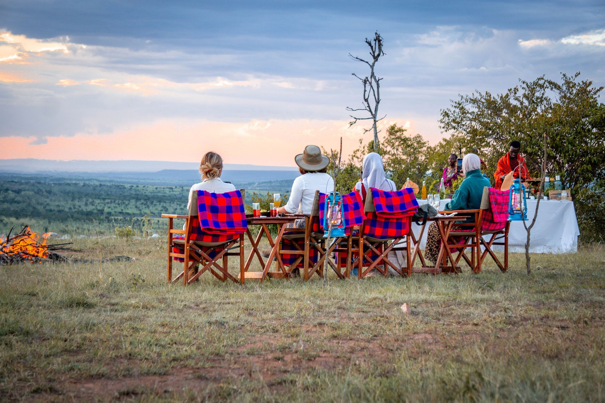

Photograph: Onyango George / EA Hospitality Pulse
The Mara's bed ceiling is absolute on paper. Nobody has got a court to look at it.
W Hospitality Group's new pipeline report names the Maasai Mara and the Serengeti among sub-Saharan Africa's luxury development hotspots, and asks whether they can absorb the supply. Kenya's own management plan answered that question in 2023. The answers that have actually counted since then have all been procedural.
The question arrived at the end of a spreadsheet. W Hospitality Group, the Lagos consultancy that has counted Africa's hotel pipeline every year since 2009, published the luxury cut of its 2026 survey last week, and the numbers were the largest it has ever recorded: 675 hotels and resorts in development across the continent, 123,846 rooms, up almost 19 per cent in a year. Within that, 105 projects at five stars and above, carrying 19,453 rooms, of which 57 are already under construction rather than on paper. North Africa took 70 of the luxury schemes. Sub-Saharan Africa took 35, spread across 14 countries, and 26 of those 35 are in holiday and resort locations rather than cities. The places the report names are Zanzibar, the Serengeti, the Maasai Mara, Victoria Falls, Yaoundé, Kampala and Kigali.
Trevor Ward, who owns the firm, did not forecast. He asked. "Can these locations absorb this new supply?" he said. "Time will tell."
For two of the places on that list, time has already told, and the answer is a matter of public record. The Maasai Mara National Reserve has had a written prohibition on exactly this since February 2023. The question for an East African operator is not whether the ceiling exists. It is what a ceiling is worth when nobody can get a court to look at it.
The Maasai Mara National Reserve Management Plan 2023 to 2032, adopted by Narok County, is not ambiguous. Its executive summary states that across all four of the reserve's management zones, "there will be no new tourism accommodation developments and no expansion of existing bed capacity permitted" for the lifespan of the plan. The reason it gives is the reserve's "very high bed capacity and visitor densities". The plan sets an optimal carrying capacity of roughly 1 to 1.2 visitors per square kilometre, and it zones the reserve into High Use, Low Use, a Mara River Ecological Zone and a buffer. The last audit it cites, from May 2016, found 31 lodges and permanent or semi-permanent camps inside the reserve holding 1,382 beds, an increase of 529 beds in about five years. The wider Greater Mara ecosystem count it reproduces, from 2009 and 2010, was 140 facilities and 4,145 beds.
So the plan is a moratorium, written by the authority that administers the land, on the basis of a density target, with a bed count attached. In 2026 it is also a plan under which two internationally branded luxury camps have opened inside the reserve.
The Ritz-Carlton, Masai Mara Safari Camp took its first guests in August 2025: 20 tented suites on an island in the Sand River, near the Tanzanian border, owned by Lazizi Mara Limited and carrying Marriott's highest-positioned flag. Rates reported at announcement started around 2,650 US dollars a night all inclusive, and subsequent reporting has put the achieved rate higher still, between 3,500 and 5,000 dollars. "This project seamlessly blends The Ritz-Carlton's legendary sophistication with the untamed beauty of the Masai Mara," said Sandeep Walia, Marriott's chief operating officer for the Middle East, Europe and Africa, when the camp was unveiled. Shivan Patel, a director of the Lazizi group, offered the demand case: "Kenya is synonymous with the ultimate safari experience."
A year later, Marriott's Luxury Collection arrived too. Kinara, 21 tented suites above a bend in the Mara River, opened in 2026 on the site of an existing safari lodge, reworked rather than built from bare ground, and operated by SARV Management under managing director Vivek Mathur. "For us, true luxury is measured by sharing unforgettable moments in nature with an exceptional guide," Mathur said at the opening. Whether 21 suites represents more beds than the lodge it replaced is not in the public record, and it matters, because the plan bars expansion of existing capacity as firmly as it bars new build. A refurbishment that adds a key is the same breach as a greenfield camp, and it is considerably harder to see from the air.
What has happened to the people who tried to test any of this is the part East African operators should read twice.
Meitamei Olol Dapash, a Maasai elder and director of the Institute for Maasai Education, Research and Conservation, filed against the Sand River camp in August 2025. His case was not about brand positioning. "We feel like we are losing the land, we are losing the wildlife," he told NBC News, and he was careful to separate the commerce from the consequence: "no issue with business, but this is not just about hotel, it is about the long-term survival of the game reserve." On 26 February 2026 the Environment and Land Court at Narok dismissed his petition and ordered him to pay the respondents' costs. It did not rule on whether the camp sits on a migration corridor, or whether the moratorium was breached. It ruled that it could not hear him at all, because he had not first complained under section 117 of the Wildlife Conservation and Management Act and appealed under section 129 of the Environmental Management and Coordination Act. "The Court finds that it lacks jurisdiction to deal with this matter," the ruling reads. "Without Jurisdiction, the Court's hands are tied."
On 3 July 2026 the same court, before Justice Lucy Gacheru, struck out a second challenge, brought by the East Africa Tour Guides Drivers Association, with costs to the respondents. Again the reasoning was the doctrine of exhaustion: the association should have gone to the National Environment Tribunal first, and the petition was, in the judge's words, "prematurely presented before this court and offends the doctrine of exhaustion". Gacheru added a line that is the most important sentence in this whole story for anyone running a camp in the Mara ecosystem. "On the material presently before the Court, the project has been completed and is operational."
That is the mechanism, stated from the bench. Construction takes 18 months. Establishing standing, exhausting a statutory complaint, appealing to a tribunal and returning to court takes longer. By the time a Kenyan court is properly seised of whether a camp should have been built, the camp is taking bookings, employing people and paying county fees, and the public interest the court is asked to weigh has quietly changed sides.
A third attempt is live. On 2 July 2026 a coalition of the East Africa Law Society, Natural Justice, JustAct and the Africa Centre for Peace and Human Rights filed in the Environment and Land Court, seeking conservatory orders against any further approvals of accommodation or expansion in the reserve, a referral to a five-judge bench, and an audit and physical inspection of every tourism facility in the protected zones. The respondents include the Ritz-Carlton Hotel Company, Marriott International, Lazizi Mara, Narok County, the National Environment Management Authority, the Kenya Wildlife Service, The Safari Collection and Minor Hotels. No ruling on it has been reported as of this week. The audit request is the one to watch, because it is the only one of the three that would produce the number the plan is missing: how many beds are actually inside the reserve in 2026.
The defendants' case is not empty. Marriott says the Sand River development completed an environmental impact assessment "in full compliance with" Kenya's environmental protections, and the Kenya Wildlife Service has stated that the camp does not "fall within, obstruct, or interfere with any wildebeest migration corridors". Narok County has told the court the camp complies with the management plan. Nor is the ecological evidence as tidy as campaigners present it. Isla Duporge, a postdoctoral zoologist at Princeton, has been blunt about the specific corridor claim: "I don't know how much wildebeest use this route specifically, and I think the data we have on that is quite weak." The system-level trend is harder to argue with. A government survey with fieldwork from mid 2024 to August 2025 put Mara wildebeest at 34,200, down from 58,000 two years earlier, and the Atlas of Ungulate Migration published in December 2025 recorded routes that carried over 100,000 animals in 2020 carrying fewer than 30,000 by the time of writing.
The commercial reading for an East African operator is separable from the conservation one, and it is uncomfortable in a different way. If you run a Mara camp, or a Serengeti one, or a Zanzibar beach property in a market the same report shows with 17 projects in the pipeline across all segments, your rate card rests on an assumption of scarcity that is enforced by a document rather than by a market. That document is now twice tested and twice unenforced. Price accordingly. The low-density premium that a conservancy camp charges over a reserve camp, and that a reserve camp charges over a Sekenani-gate lodge, is a premium on competitors not arriving. A 20-suite camp with Bonvoy distribution behind it is not a competitor in the old comp set. Marriott's third quarter, reported on 2 November, showed global revenue per available room up 6.5 per cent and a pipeline north of 634,000 rooms, and a loyalty programme operating at that scale can fill 20 suites in the Sand River for reasons that have nothing to do with the Mara's own demand curve.
Contrast what Tanzania did in September. The Tanzania Wildlife Management Authority advertised investment sites across six wildlife areas, and it did not write a prohibition. It wrote numbers. One luxury nature hotel at Mpanga-Kipengere of up to 100 beds, other accommodation there at 40 to 60 beds, six sites at Wami-Mbiki capped at 50 beds each, one at Swagaswaga at 50, five eco-tented sites at Makuyuni at 50 to 60. Minimum capital of 1 billion Tanzanian shillings for a lodge or permanent tented camp, 20-year business plans, concession contracts signed with the Conservation Commissioner. Those caps sit inside a contract, which means a breach is a contractual default with a named counterparty, not a public-interest petition that has to survive the doctrine of exhaustion first.
Wangari Kebuchi, an economist and managing director of Expertise Global, framed the principle the Mara is testing: "Future tourism growth should be guided by ecological limits, not commercial demand." Kelvin Kubai, an advocate of the High Court of Kenya, put the legal version: "When the interests of wildlife and nature conflict with tourism, the rights of nature are supreme." Johnson Yiamat, who founded the Osotua Green Alliance, named what actually happened instead. "I feel that procedural outcomes should not overshadow the substance of the concerns that were raised."
Ward's question deserves a straight answer, and East Africa has supplied one without meaning to. These locations will absorb the new supply, because absorption is not currently a decision anyone is empowered to make. A bed cap written into a concession contract is a number a developer must respect. A moratorium written into a management plan, with no forum that will hear a complaint about it before the concrete sets, is a number a developer may price around. Incumbents in the Mara and the Serengeti have spent a decade selling exclusivity. The next decade will test whether they were selling a product or a planning assumption.
📣 Telegram 💬 WhatsApp 💼 LinkedIn 📚 All guides